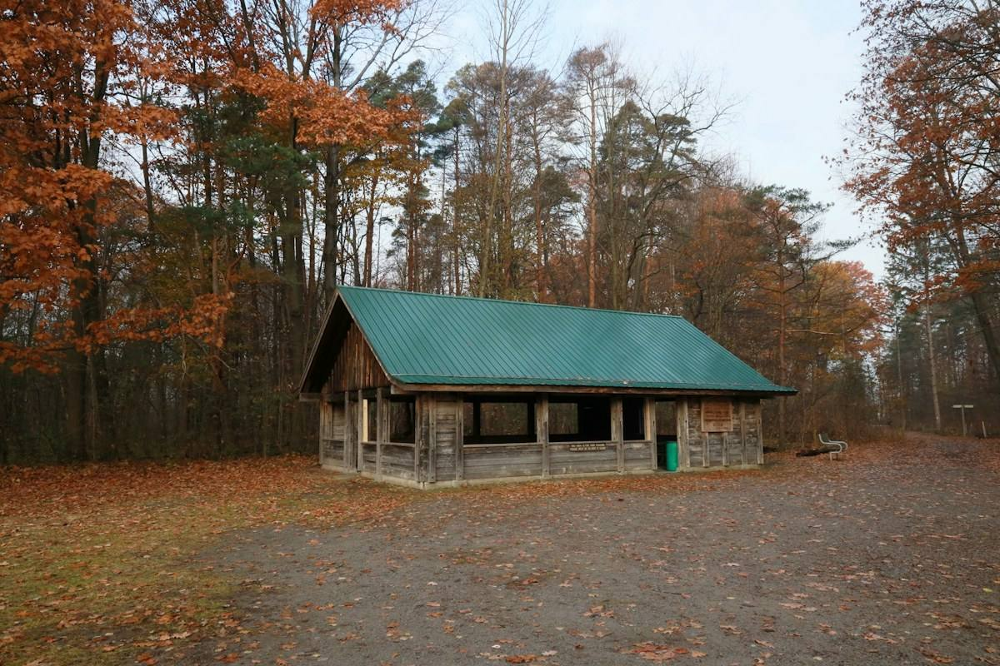

No. 01 · Note
A wall that opens
In this climate the strongest wall is often the one that can disappear.
The New Zealand house has always had a porous streak in it. The villas of a century ago wore verandas like armor against nothing in particular, deep shaded galleries that made the edge of the house the best place in it. The colonial logic was inherited from colder islands, but the climate here argued back, and the veranda was the argument won. You did not need thick walls in Auckland; you needed a roof that came out far enough and a wall you could take away when the afternoon behaved.
We think about that constantly, because our default inheritance is the opposite: the sealed, insulated, mechanical box, a building like a thermos flask. There are weeks when a thermos flask is exactly right. There are also weeks, most of them in this country, when the best thing a wall can do is get out of the way, and the thermos has no opinion on the matter.
So the studio keeps a running obsession with the screen: a wall on rails, a wall of slats, a wall that folds. On Cliff House, cedar panels run the western length of the living floor; closed, they cut the low western sun and hold the nor'easter at arm's length. Open, the room becomes a veranda the width of the house. The screen is not decoration. It is the difference between a house with one setting and a house that can take whatever the day brings.
The wall is not absent when it opens. It is standing, folded, waiting for the weather to turn.
From the pavilion study notes, 2024
Every practice carries a question it keeps returning to, and ours lives in the pavilion study we keep on the worktable: one pad, one glazed room, one roof plane, screens where the wind wants a wall. How little can a building be and still shelter well? The study has been rebuilt a dozen times in card and string, and each rebuild trades something solid for something adjustable. The roof gets thinner. The core gets smaller. The screens get smarter, and the building gets better at being nearly nothing when the weather is kind and completely enough when it is not.
There is a temptation to read this as a style: architecture-with-slats, the timber fluting that signals contemporary design the way a certain font signals luxury. We would rather it be read as a philosophy of attention. A fixed wall makes one promise and keeps it in every weather, which is a kind of honesty. A moving wall makes a different promise: that the building trusts you to read the sky. It asks more of its people. It rewards them more, too, on the fifteen days a year when the room and the coast become one room, and the sea air moves through the house like it is being aired.

The economics are honest too, which clients are right to ask about. A wall on rails costs more than a wall of studs and gib, and it will ask for maintenance across its life; we say this plainly before anyone falls in love. But compare it honestly with the alternative, which is not a cheap wall but a second room, or a bigger heat pump, or the glass-roofed extension that gets built ten years later because the house never quite opened to the garden. A screen that buys the house three extra weeks of outdoor living each spring, and three each autumn, is often the cheapest floor area on the site.
And there is a quieter dividend. Buildings that open teach their households the weather. Clients who have lived behind one of our screens for a couple of years start reporting the wind the way farmers do: which nor'wester strips the washing, which southerly is worth shutting the courtyard wall against, which still evening is the one to throw every door wide. We did not design that literacy, but we believe buildings are partly responsible for it, and we believe the sealed box, for all its efficiency, is slowly unteaching it. A wall that opens keeps the old skill alive. The house stops being a place the weather happens outside of, and becomes the instrument you play it with.
BLACKRIDGE · Notes from the ground